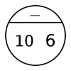

Overview
Learning Objectives
Evidence Statements
Product Outcomes
Materials
Preparation
 Unit 1Everything you learned in Bootstrap 1...
Unit 1Everything you learned in Bootstrap 1...Students review almost all of the material from Bootstrap 1, including Circles of Evaluation, Contracts, Expressions dealing with strings and images, Variable definitions, Function definitions, and the Design Recipe.
Agenda
5 minIntroduction
30 minExpressions
20 minContracts
30 minThe Design Recipe
5 minClosing
Product Outcomes:
Students define functions to meet a goal, or problem statement.
Standards and Evidence Statements:Length: 90 minutesStandards with prefix BS are specific to Bootstrap; others are from the Common Core. Mouse over each standard to see its corresponding evidence statements. Our Standards Document shows which units cover each standard.
Glossary:
contract
contracts
design recipe
domain
name
range
variable
variables
Materials:
Editing environment (WeScheme or DrRacket with the bootstrap-teachpack installed)
Design Recipe Sign
Preparation:
Computer for each student (or pair), running WeScheme or DrRacket
If using DrRacket, make sure the Review.rkt file is loaded
Student workbook folders with names on covers, and something to write with
Types
Functions
Introduction
Expressions
Overview
Students review Racket expressions, defining variables, and circles of evaluation from Bootstrap 1
Learning Objectives
Evidence Statements
Product Outcomes
Materials
Editing environment (WeScheme or DrRacket with the bootstrap-teachpack installed)
Preparation
Computer for each student (or pair), running WeScheme or DrRacket
If using DrRacket, make sure the Review.rkt file is loaded
Student workbook folders with names on covers, and something to write with
Expressions (Time 30 minutes)
Open this link in a new window. At the top of the definitions window, there are a number of variables defined.
What are the names of the variables defined here? What is the value of each variable?
What would you get back if you were to evaluate each of those variables in the Interactions window? Take a guess first, then click "Run" and type the name of each variable into the interactions window. Were your guesses correct?
Look at the variable OUTLINE on line 20.
What shape will this draw?
How big do you think it will be?
Will it be solid or outline?
What color will it be?
Try evaluating OUTLINE in the Interactions window. Was the fill what you expected it to be?
The problem is that we used a very confusing variable name: the name was "outline," but the value was "solid". Remember: always choose your variable names carefully!Review UI of the DrScheme or WeScheme IDE. Remind students about the importance of good variable names: they make code more readable, and a descriptive variable name makes it very clear what is being defined.
In your review file, define:
two additional Numbers
two additional Strings
one more Boolean
one more Image
and practice using them in the interactions window.
Now we have values, and we know how to define shortcuts for them. However, there are also plenty of built-in functions, which let us play around with these values.What are some functions you know that work on numbers? How many can you list?
Remind students that arithmatical operations, such as +, -, *, and / are functions.
How would you draw the Circle of Evaluation for the expression 10 - 6?
What is the function in this expression?
Where inside the circle does the function go?
What numbers are the inputs to the - function in this expression?
Where inside the circle do the inputs go? in which order should the numbers appear?
The expression 10 - 6 can be drawn as a Circle of Evaluation like so: How would you convert this circle of evaluation into Racket code?
What is the first character you type when converting a Circle of Evaluation? (Hint: If you break a circle in half, you’re left with two things that look like which keys on a keyboard?)
What comes next in a Racket expression, right inside the parentheses?
Where do you look next? How do you know which input comes first in the Racket code?
How do you end, or close a Racket expression?
The above Circle of Evaluation converts to this Racket expression: (- 10 6) Why would it be incorrect to write (- 6 10)?Turn to Page 3 in your workbooks. Each row has a math expression. You’ll have to convert that math expression into Circles of Evaluation, and then convert the Circle into Racket code.
Review circles of evaluation and nested circles with numbers, as well as how to convert them to Racket code. Remind students that inputs are read from left to right, and that order matters. Be sure to challenge students with Circles that are nested at least two levels deep. Many students who are able to do simple nesting still struggle when dealing with more complex expressions.
Contracts
Overview
Learning Objectives
Evidence Statements
Product Outcomes
Materials
Preparation
Contracts (Time 20 minutes)
It’s important to keep track of how these functions work, and Bootstrap 1 introduced the idea of Contracts. The contract for the star function is shown below. Contracts summarize three pieces of essential information about a function:
The Name of the function: in this case, star
The Domain of a function, which is the type(s) of data that the function expects: in this case, a Number and two Strings.
The Range of this function, which is the type of data that the function produces: in this case an Image.
A contract is a note we write to ourselves about how to use the function. Just as in Bootstrap 1, it will be helpful to keep track of the contracts for each function you learn about. The first page in your workbook has a table labeled "Contracts," where you can (and should!) copy down each contract as you learn it.The Contract for + is shown below. Write down the Contracts for *, -, / and sqrt
Emphasize to students that a function’s contract can tell you a LOT about that function. It may also be useful to ask them to articulate reasons why Contracts are a good thing, so they are able to say it in their own voice. Review contracts for functions that produce images, such as circle, triangle, rectangle, ellipse, etc.
Below are some expressions using functions you used in bootstrap 1. For each one, identify which function is being used and write its Contract in your Contracts page. If you need help, try typing the expressions into your computer.
(circle 75 "solid" "red")
(rectangle 20 30 "outline" "green")
(ellipse 85 100 "solid" "pink")
(text "Hello world!" 50 "blue")
For even more practice, have students write contracts for various word problems. This is a great time to remind them about connections to algebra and applying skills learned in Bootstrap to their math classes.
The Design Recipe
Overview
Learning Objectives
Students review the Design Recipe and become comfortable using it to write functions
Evidence Statements
Product Outcomes
Students define functions to meet a goal, or problem statement.
Materials
Design Recipe Sign
Preparation
The Design Recipe (Time 30 minutes)
Turn to Page 4 in your workbook.
Here we have a function definition:
What is the Name of this function? How do you know?
How many inputs does it have in its Domain?
What kind of data is the Domain?
What is the Name given to this input?
What’s the Range of this function?
In your own words, what does this function do?
The Contract is a way of thinking about the function in a general way, without having to worry about exactly how it will work or how it will be used. Starting with simple questions such as these will make later steps much easier to think about.The Design Recipe is a useful tool for having students think about word problems and break them down into smaller parts (Contract, purpose statement, EXAMPLEs, and code). Instead of jumping into writing a function, students should first note what data types the fuction will take in and produce, and practice using their own words to describe what the function does. After this step, the Contract and Purpose Statement can be relied on to write EXAMPLEs for the function.
Look at the two EXAMPLEs, written above.
What will happen if you type (double 5) into the interactions window? What about (double 7)?
What would happen if you changed the name of the input n to something else, such as x? What else would have to change?
Once we know a function’s contract, it becomes easy to write examples: we start by using the function with some input(s) ((double 5)), then writing in Racket code what we expect the computer to do with those inputs. (In this case, double will multiply the example input by 2.)Writing EXAMPLEs is akin to "showing your work" in math class: You want to see how students arrived at their answers, not just that they have an answer. It is also much easier to debug a function using the design recipe, because you can check each section individually for errors. Writing EXAMPLEs for code is also called "unit testing," something professional programmers do all the time.
In your workbook, write the contract and two EXAMPLEs for a function called triple, which takes in a number as its input and multiplies it by 3.
Now look at your two EXAMPLEs. What is the only thing that changes from one to the other?In your workbook, circle what is changeable, or variable, between your two EXAMPLEs.
The only thing that changes is the Number being given to triple and multiplied by 3. Remember from Bootstrap 1 that once you’ve circled and labeled what changes in each example, it becomes incredibly easy to define the function! All you need to do is replace the thing that changes with its label!Now write the function header and body for triple. Don’t forget to replace the changing thing with a variable!
Just as writing a Contract helps us write Examples, writing the Examples makes it easier to write the definition of a function: circling what changes between the examples makes it obvious that the changeable thing is where we need to use a variable in our function. You will want to explicitly connect each step in the Design Recipe to every other step. Ask students to justify each part of their Contract by referring back to the Word Problem, to justify each step of their Examples by referring back to the Word Problem and Contract, and finally to justify each step of the definition by referring to the Word Problem, Contract and Examples. The same variable name can be used in multiple functions, just as in math (where many functions use x as the variable name, for example) Make sure students fill out the ENTIRE contract, with two examples, before they circle what changes and move on to the function body. Build these good habits early in the course!
Write a function plus1, that takes in a number and adds one to it
Write a function mystery, that takes in a number and subtracts 4
Write a function red-spot, that takes in a number and draws a solid red circle, using the number as the radius
red-spot is a difficult function to write, and some students won’t know quite what to do. This is intentional! Give them some time to be frustrated with it, and then cut it short.
Closing
Overview
Learning Objectives
Evidence Statements
Product Outcomes
Materials
Preparation
Closing (Time 5 minutes)
You just reviewed the first half of the entire Bootstrap 1 course in one unit! Throughout Bootstrap 2 you’ll use all the concepts and many of the functions that you learned in Bootstrap 1. You will also brand new data types, functions, and programming concepts. Of course, you’ll do it all with the help of our old friend the Design Recipe, which will help you write your own functions for your own videogame! Since this is Bootstrap 2, the games you will be able to create will be even more interactive and advanced than in Bootstrap 1. There’s a lot to learn... onward to Unit 2!